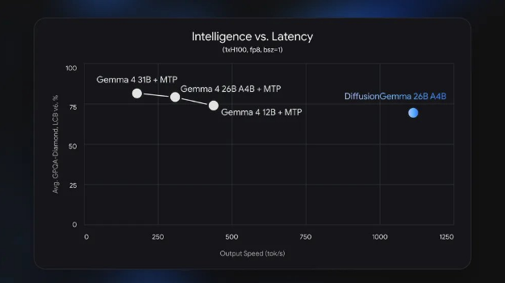
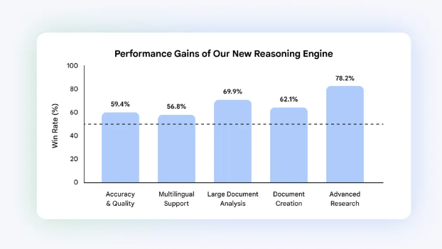
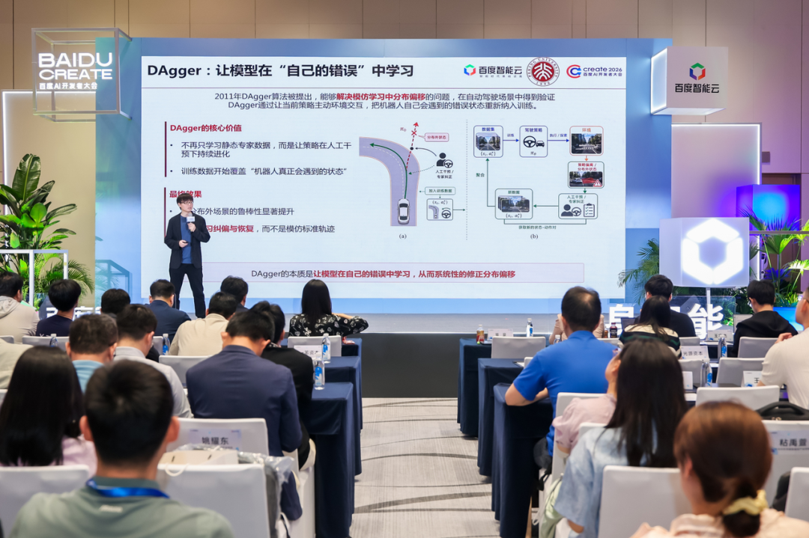
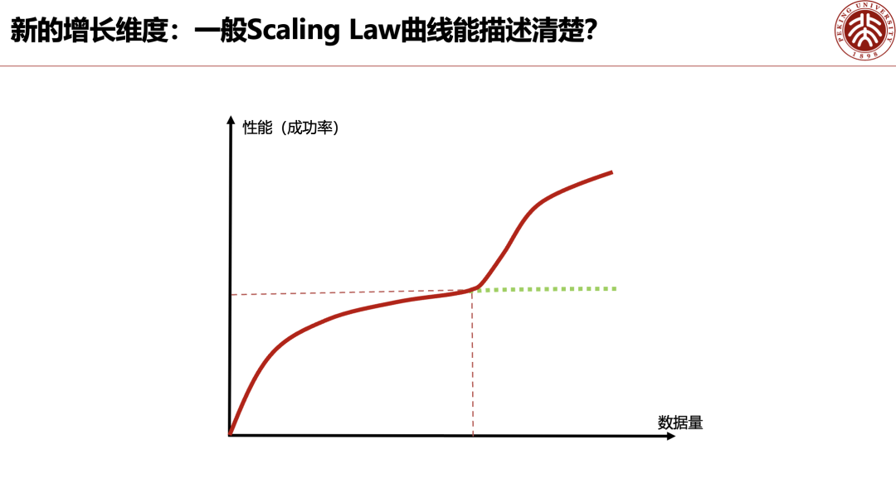
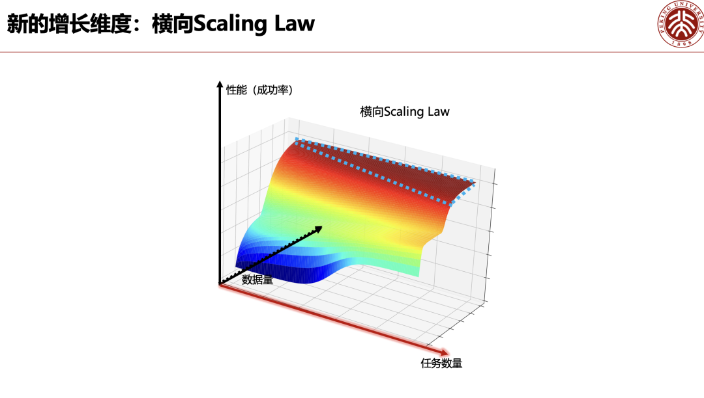
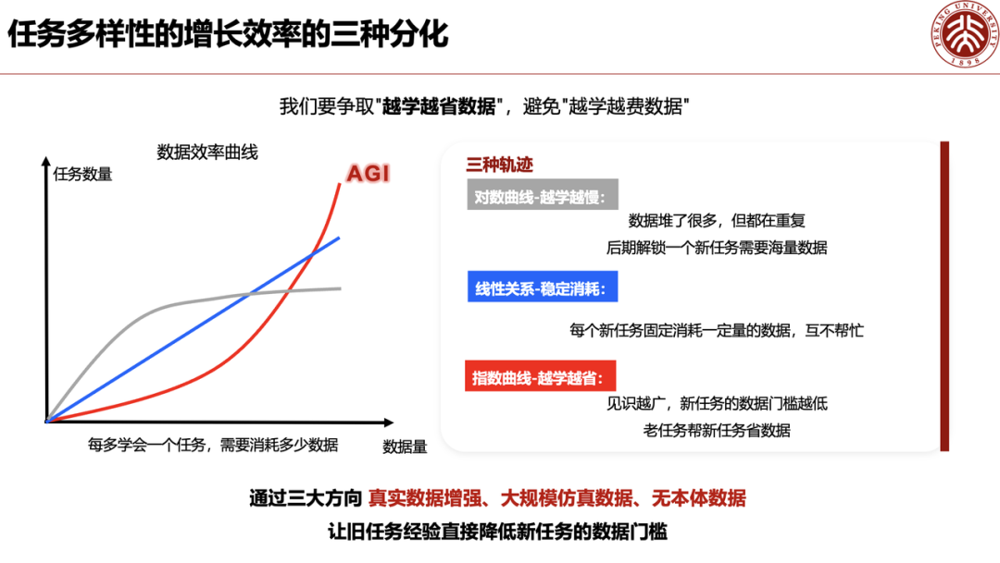
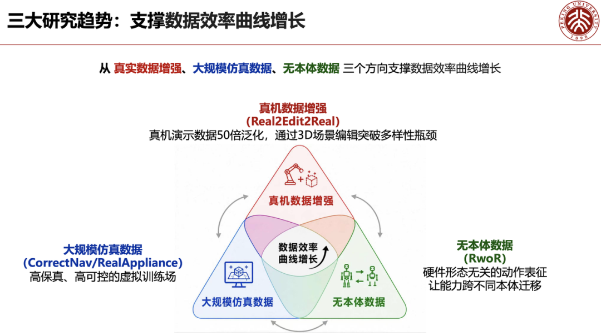

Exclusive | Peking University's Dong Hao: "Scaling Law Confined to Data Alone Cannot Produce General-Purpose Robots"

A "Data Volume × Task Volume" two-dimensional Scaling paradigm represents the genuine solution for embodied AGI.
Of late, embodied intelligence model iteration has decelerated amid mounting divergence.
In response, Peking University Associate Professor Dong Hao (Chief Scientist at Shangwei Qiyuan) presented a contrarian view: incumbent approaches—imitation learning, reinforcement learning, and simulated data—each harbor critical deficiencies, necessitating a paradigm shift. Speaking at a recent Baidu Intelligent Cloud embodied intelligence forum, Dong Hao detailed his proposal for a two-dimensional horizontal Scaling Law that weaves together world models, generative data, and human demonstration into a unified framework, enabling robots to acquire an expanding repertoire of tasks while consuming progressively less data. (Leiphone (WeChat public account: Leiphone))
Dong Hao contends this approach is pivotal to the mass adoption of domestic and general-purpose humanoid robots.
Below is Dong Hao's address, obtained exclusively by AI Tech Review and condensed without distortion of the original intent:

01
Imitation Learning Sufficient Only for Cold Start; Singular Demonstration Data Harbors Inherent Deficiencies
Addressing the Scaling Law that now commands industry consensus, Dong Hao partitions embodied model training into two distinct phases: pre-training via imitation learning and subsequent iteration via reinforcement learning—each exhibiting pronounced limitations.

Imitation learning’s advantage is rapid cold start: standardized human demonstration data swiftly imparts foundational operational skills—a parallel to large language model training. Its critical deficiency, however, is that training samples consist exclusively of successful trajectories, with zero representation of failure or error distributions. Even after amassing tens of thousands of canonical demonstrations, a robot that errs in a real-world setting remains incapable of autonomous correction or adjustment.

China has already yielded mature applied research. The Beijing Institute of Artificial Intelligence (BIAI) constructed a large-scale multimodal dataset across 15 heterogeneous dual-arm robot platforms, training a hardware-agnostic Vision-Language-Action (VLA) model that now stands as a benchmark for the imitation learning paradigm.
The simulation track has similarly delivered interim成果. Shanghai Artificial Intelligence Laboratory unveiled InternData-A1, a fully synthetic simulated dataset requiring no real-robot collection, which in multiple operational tasks achieved success rates exceeding those obtained from real-world data.

02
Reinforcement Learning Rectifies the Fault-Tolerance Deficit
"Imitation + Reinforcement" Delivers Fully Autonomous Sequential Operations
Imitation learning alone remains insufficient to operationalize general-purpose robots; reinforcement learning represents the industry’s确定的trajectory.
Dong Hao highlighted the canonical Dagger data aggregation framework—a concept validated years ago in autonomous driving. Data limited to nominal driving scenarios strips a model of fault tolerance, necessitating the inclusion of failure-scene samples. When a robot errs, human intervention is triggered and the corrective trajectory is folded back into the training set, progressively enhancing task stability in real-world settings.
Dong Hao disclosed his lab’s latest deployment成果: the team has achieved fully autonomous robotic laundry operations. The system independently navigates, opens and closes the washing machine door, and upon a failed garment grasp, initiates a self-directed retry—mimicking human behavior—requiring zero human intervention across the entire workflow.
Empirical evidence confirms that a hybrid architecture—imitation learning as the base layer, reinforcement learning for ongoing iteration—can sustain high-intensity sequential operations within a bounded environment.



03
One-Dimensional Scaling Reaches Its Apex; Horizontal Two-Dimensional Scaling Law Reshapes the Industry’s Growth Trajectory
Even after closing the imitation-plus-reinforcement learning loop, the conventional one-dimensional Scaling Law remains inadequate for describing the long-term growth ceiling of general-purpose embodied intelligence. Dong Hao advances a core innovation: a horizontal two-dimensional Scaling Law that introduces a task-quantity axis alongside the existing data-volume dimension.
Within this framework, dataset expansion drives an upward shift in the initial completion rate for novel tasks while simultaneously reducing the sample volume required for high success rates. The industry must circumvent two inefficient growth patterns: a purely linear relationship between data growth and task acquisition, and persistently diminishing marginal returns.
The optimal trajectory is an "efficiency red line": as models iterate and data scale widens, the robot’s mastered-task inventory grows at an accelerating rate, realizing "more learning from less data"—an indispensable passage to physical-world AGI. The industry’s buzziest concepts over the past six months—world models, Umi, and others—all serve this emergent growth curve at their core. Real-robot data, simulated data, and hardware-agnostic general pre-training data—every innovation aligns with the two-dimensional scaling paradigm.


04
Multi-Path Data Augmentation Proves Operational
Fifty equivalent samples from a single real-robot data point; human demonstrations converted to robot trajectories at marginal cost. Dong Hao unveiled his team’s latest generative data augmentation成果: leveraging world models and generative AI, a single real-world robot trajectory yields 50 photorealistic training variants differentiated in object arrangement and spatial configuration. This breakthrough substantially mitigates the industry’s pain points—prohibitive real-robot collection costs and acute data scarcity—while markedly enhancing real-data utilization efficiency.
Simulation infrastructure’s value extends beyond foundational motion training—it is the linchpin for domestic robots to surmount the bottleneck of non-standard home appliance manipulation.
Home appliance models are diverse and their operational logic varies widely. A model capable of parsing instruction manuals and inferring device-specific operating logic would dramatically widen its deployment envelope. Indoor navigation, multi-object spatial reasoning, and similar tasks can be mass-produced through simulation pipelines; simulated and real-robot data operate in bilateral synergy, perpetually expanding the robot’s capability frontier.
State-of-the-art models now recognize a broad spectrum of home appliances; upon receiving natural-language commands such as "braise rice" or "squeeze orange juice," they autonomously pair with the appropriate device and execute the full workflow. On large-scale data acquisition, the team is pioneering democratized low-cost strategies: wearable handheld cameras capture human operation footage that is directly translated into robot-trainable trajectories. For a given budget, this yields voluminous demonstration data, perpetually optimizing the two-dimensional scaling curve and driving down the marginal cost of robot data collection over the long haul.


05
A Unified Industry Substrate: Every Frontier Technology Exists to Accelerate the Two-Dimensional Scaling Curve
Dong Hao concluded his address with a central thesis: the industry must abandon the conventional one-dimensional Scaling Law mindset and rebuild embodied intelligence research and development around a two-dimensional framework.
The new growth curve’s central imperative is to perpetually widen the envelope of executable tasks through incremental data, all while holding success rates steady. The disparate technology tracks currently under intense market debate—world models, Umi, human-video pre-training, among others—appear to diverge, yet their foundational objective is strikingly convergent: to hasten the materialization of the efficient two-dimensional growth curve.
Only upon completing this technological trajectory will general-purpose embodied intelligence and domestic service robots possess the requisite foundation for large-scale commercial deployment. (Leiphone)